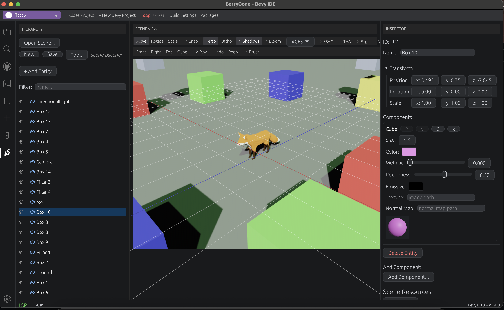
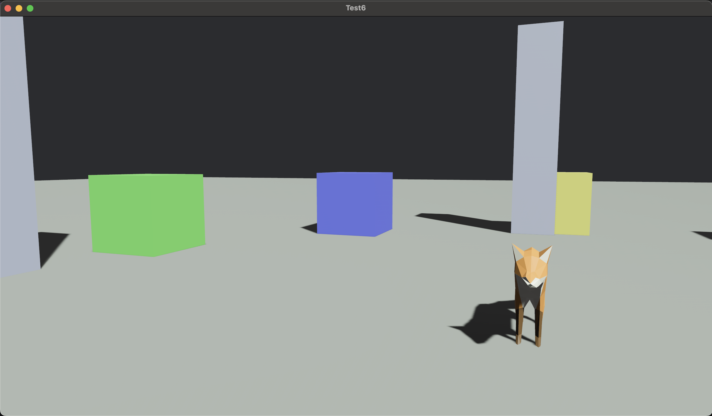
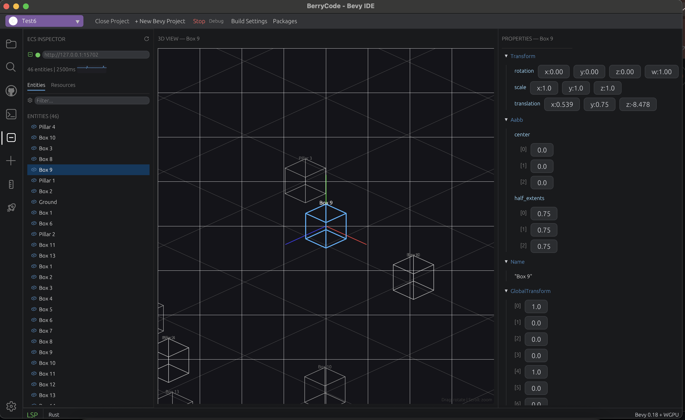
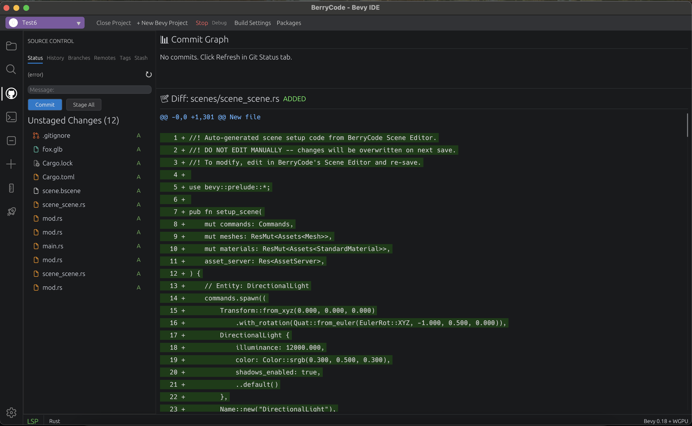
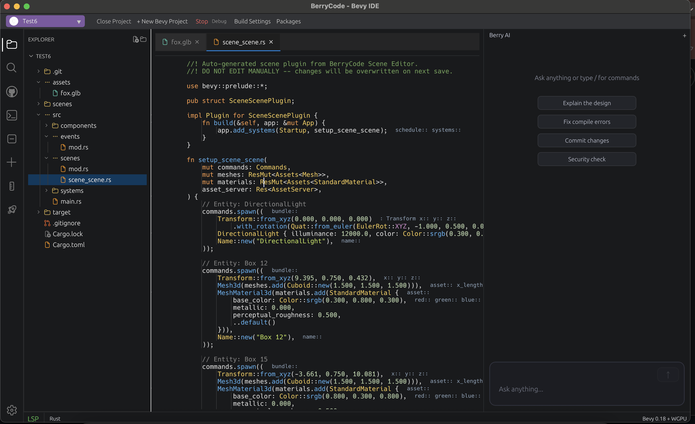

No Electron. No bloat. Built with Bevy + WGPU — the same stack as your game. Scene editor, ECS inspector, and system graph included from day one.
Bevy deserves its own IDE — not a general-purpose editor with plugins bolted on.
Unity-class 3D viewport with translate, rotate, and scale gizmos. Entity hierarchy, component inspector, prefab system, and multi-scene tabs.
Connect to a running Bevy app via BRP. Browse entities, components, and resources in real-time with auto-refresh.
Visualize system execution order and dependencies. Identify bottlenecks and understand schedule topology at a glance.
Real-time log of all Bevy events. Filter by event type and inspect event payloads as they happen.
One-click generation of Component, Resource, System, Plugin, Event, and State boilerplate. Insert directly at cursor.
Search crates.io for Bevy-compatible plugins. View metadata and add to Cargo.toml with one click.
Completions, hover, go-to-definition, references, diagnostics, format, rename, code actions, inlay hints, macro expansion.
iTerm2-class PTY emulator with VT100/xterm, ANSI 256 colors, 10K scrollback, and multi-tab support.
Full modal editing — Normal, Insert, Visual, Command, Replace — with operators, text objects, registers, marks, and dot repeat.
6-tab panel with Status, History, Branches, Remotes, Tags, and Stash. Commit graph and diff viewer included.
Variables, call stack, watch expressions, and breakpoints via DAP protocol.
Integrated LLM assistant via gRPC. Get help without leaving the editor.

3D Scene Editor with fox model

Game running with scene entities

ECS Inspector with live entity browser

Git integration with diff viewer

Code editor with AI chat assistant
No foreign runtimes. BerryCode runs on the technology you already use.
Prerequisites: Rust 1.75+
macOS (Metal) · Linux (Vulkan / OpenGL) · Windows (DirectX 12)
You don't need to be an engineer or a designer to contribute. There are many ways to get involved.
Found something broken? Open an issue — that alone helps us improve.
Share your ideas, suggest features, or tell us what's confusing.
Help make BerryCode easier to learn for newcomers. No code required.
Star the repo, share a post, or tell a friend. Every bit of visibility counts.
BerryCode is free, open-source, and MIT licensed.